The analog of digital logic gates in quantum computing
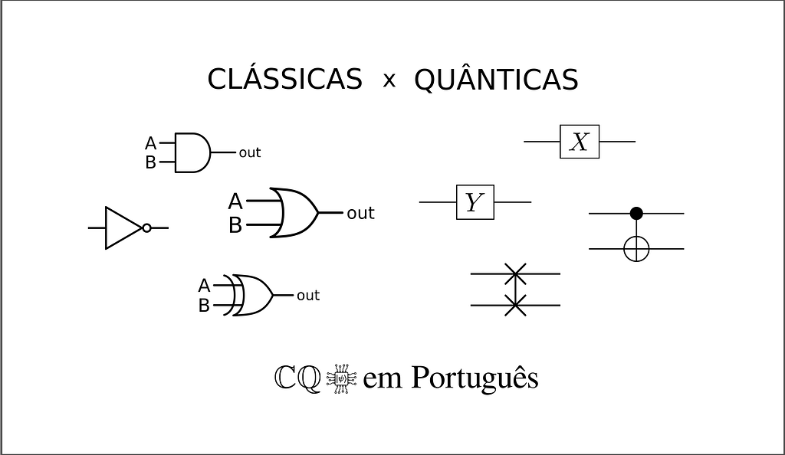
Continuing the text Qubits — The (first) principle of quantum computing, this article covers quantum logic gates, which are responsible for modifying and entangling the states of qubits.
Introduction
Classical logic gates and logic circuits
A classical logic gate is a device (usually electronic) with a set of input bits and one output bit. This device implements some logic of “ones” and “zeros” to determine the state of the output bit from the states of the input bits.
The four main classical logic gates are: NOT, OR, AND and XOR.
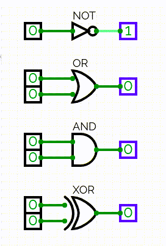
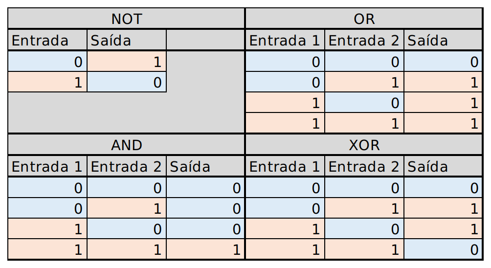
By combining classical logic gates, it is possible to create automata and logic circuits capable of performing calculations. The processor of a classical computer, for example, is mostly made up of logic gates.
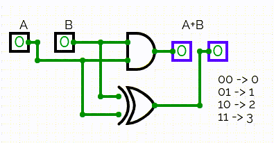
Quantum circuits
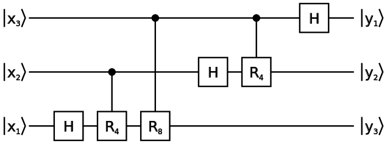
Quantum circuits are diagrams that are commonly used as pseudocode for quantum algorithms. In them, qubits are represented as horizontal lines, and the “quantum logic gates” — or rather, the operators analogous to digital logic gates in quantum computing — are represented as small rectangles drawn on the horizontal lines, sometimes accompanied by vertical lines that connect them to control qubits. The left-to-right path along the horizontal lines represents the time evolution of the system.
What “quantum logic gates” actually are
These so-called quantum logic gates are, in fact, unitary linear operators (matrices). So, it is convenient to continue this reading with a brief overview of linear algebra. After that, the main quantum logic gates and their respective functions within quantum circuits will be presented.
Linear algebra concepts
Linear Maps/Transformations and Operators [1]
Linear maps, also known as linear transformations, linear mappings and, in some cases, linear operators, are functions that have the following properties:
- F(𝑏+𝑐) = F(𝑏) + F(𝑐), where 𝑏 and 𝑐 belong to the domain of F.
- F(λ𝑏) = λF(𝑏), where λ is a constant.
A matrix A with 𝑛 rows and 𝑚 columns is a linear map such that:
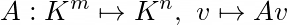
where:
- K is a field, a special type of number set. In quantum computing, this K is usually ℂ (the set of complex numbers).
- Kᵐ and Kⁿ are vector spaces of, respectively, 𝑚 and 𝑛 dimensions.
- 𝑣 is a vector belonging to the vector space Kᵐ
- A𝑣 (the product of the matrix A by the vector 𝑣) is a vector belonging to the vector space Kⁿ
Translating from mathematical language into plain English: the product of the matrix A by the vector 𝑣 ∊ Kᵐ results in a vector A𝑣 (which we will call 𝑢) such that 𝑢 ∊ Kⁿ.
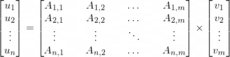
The matrix A, as a linear map, has the following properties:
- A(𝑏+𝑐) = A𝑏 + A𝑐, where 𝑏,𝑐 ∊ Kᵐ
- A(λ𝑏) = λA(𝑏), where 𝑏 ∊ Kᵐ and λ∊ K
Two matrices A and B with 𝑛 rows and 𝑚 columns have the following properties:
- (A+B)(𝑐) = Ac + Bc, where 𝑐 ∊ Kᵐ
- (A+B)(𝑏+𝑐) = A(𝑏+𝑐) + B(𝑏+𝑐) = A𝑏 + A𝑐 + B𝑏 + B𝑐, where 𝑏,𝑐 ∊ Kᵐ
- (A+B)(λ𝑐) = A(λ𝑐) + B(λ𝑐) = λA𝑐 + λB𝑐, where 𝑐 ∊ Kᵐ and λ∊ K
A linear map can be called a linear operator when its domain is equal to its codomain.
Identity matrix
A matrix with 𝑛 rows and 𝑛 columns whose main diagonal entries are 1 and all other entries are 0 is called an identity matrix and is usually denoted by Iₙ (or simply I, if the number of rows and columns is already clear from the context). [6]
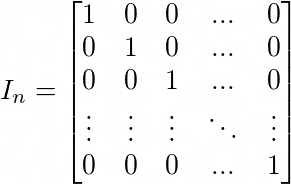
This type of matrix is special because of the following property: for any matrix A with 𝑚 rows and 𝑛 columns, we have Iₘ A = A Iₙ = A. [7]
This first property implies the following ones:
- For any column matrix 𝑣 with 𝑛 entries: Iₙ 𝑣 = 𝑣.
- For any row matrix 𝑢 with 𝑛 entries: 𝑢 Iₙ = 𝑢.
- For any matrix A with 𝑛 rows and 𝑛 columns: Iₙ A = A Iₙ = A.
Since, when dealing with linear maps, it is customary to represent vectors as column matrices, it is assumed that an identity matrix I is a linear operator that does not change the operand (just like the function 𝑓(𝑥)=𝑥).
Transpose and conjugate transpose matrices
Roughly speaking, the transposition of a matrix of real numbers is an operation in which the rows of the matrix are turned into columns and the columns are turned into rows.
Consider a matrix of real numbers A with 𝑛 rows and 𝑚 columns. Its transpose Aᵀ is a matrix with 𝑚 rows and 𝑛 columns whose entries Aᵀ₍ⱼ,ₖ₎ (𝑗 being the row index and 𝑘 the column index) satisfy the equivalence Aᵀ₍ⱼ,ₖ₎=A₍ₖ,ⱼ₎. [1]
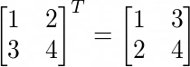
For matrices of complex numbers, there are also conjugate transposes, in which, in addition to the row-column inversion, the entries are “conjugated”. [2] When the matrix of complex numbers is a linear operator, its conjugate transpose is also known as the Hermitian adjoint operator. [8][10]
Basically, the conjugate of a complex number 𝑧=α+iβ is 𝑧*=α-iβ (note the inversion of the sign of the imaginary part).
Unlike the simple transpose, which is symbolized by a superscript letter ‘T’, the conjugate transpose is represented by a superscript Dagger symbol (‘†’) or by an asterisk (‘*’).
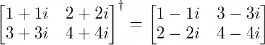
Inverse functions and matrices
Consider an injective function 𝑓:X⟼Y (X being its domain and Y its codomain). The inverse function of 𝑓 is a function 𝑔:Y⟼X such that, for 𝑥∊X and 𝑦∊Y, if it is true that 𝑦=𝑓(𝑥), it is also true that 𝑥=𝑔(𝑦), that is: 𝑔(𝑓(𝑥))=𝑥. [3]
For example: the functions 𝑓(𝑥)=2𝑥 and 𝑔(𝑥)=𝑥/2 are inverses, since 𝑓(𝑔(𝑥))=2(𝑥/2)=(2/2)𝑥=𝑥.
Inverse functions are often denoted by a superscript “-1”. The inverse of 𝑓(𝑥), for example, can be denoted by 𝑓 ⁻¹(𝑥). However, this is a confusing notation, since the superscript “-1” can also denote a power, and 𝑓 raised to -1 is not necessarily equal to the inverse of 𝑓. [3]
An inverse matrix is, basically, a matrix form of an inverse function.
Consider a square matrix A. Its inverse is a matrix A⁻¹ such that, if it is true that 𝑢=A𝑣, it is also true that 𝑣=A⁻¹𝑢, that is, 𝑣=AA⁻¹𝑣.
Given that an identity matrix I with the same number of rows and columns as AA⁻¹ satisfies 𝑣=I𝑣, it follows that AA⁻¹=I. Therefore, to prove that a matrix B is the inverse of A, it is enough to show that AB=I. [1][4]
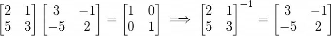
Unitary matrix [5]
A square matrix U (which has the same number of rows and columns) is said to be unitary when its conjugate transpose is also its inverse.
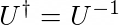
It is possible to check whether a square matrix U is unitary in two ways:
- If |det U|=1, then the matrix U is unitary.
- If UU*=I, then the matrix U is unitary.
A unitary matrix is a linear map characterized by not changing the norm of the operand vector (|U𝑣|=|𝑣|).
All linear operators used in quantum algorithms are unitary.
Self-adjoint operators
A linear operator A acting on a Hilbert space is said to be self-adjoint when it satisfies the rule ⟨A𝑢|𝑣⟩=⟨𝑢|A𝑣⟩ for any pair 𝑢,𝑣. [11]
When the linear operator is a square matrix, it is also characterized by being equal to its own Hermitian adjoint. [12]
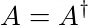
Some of the linear operators used in quantum algorithms are self-adjoint.
1-qubit operators
Here begins the discussion about “quantum logic gates” (or rather, the basic operators of quantum computing). First, 9 1-qubit gates will be presented: Pauli-X, Pauli-Y, Pauli-Z, Rx, Ry, Rz, Hadamard, Phase and π/8. Then, in the next section, 4 multi-qubit gates will be presented: Controlled-NOT, Swap, Controlled-U and Toffoli. These are just some of the existing quantum logic gates. It is possible to create an infinity of other quantum logic gates from these more basic ones.
Pauli-X, Pauli-Y and Pauli-Z
The Pauli-X, Pauli-Y and Pauli-Z operators are responsible for rotating the state of a qubit by 180 degrees on the Bloch sphere.
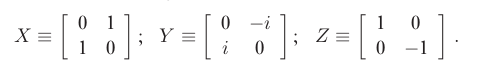
The names of the operators already suggest the rotation axis of each one: Pauli-X rotates around the x axis, Pauli-Y rotates around the y axis and Pauli-Z rotates around the z axis.
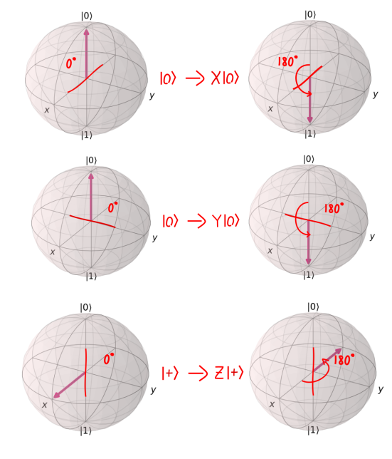
The Pauli-X operator can be interpreted as a “quantum version” of the NOT logic gate, since:
- X|0⟩ = |1⟩
- X|1⟩ = |0⟩
The three Pauli operators are self-adjoint.
Rx, Ry and Rz rotations
The Rx, Ry and Rz operators rotate the state of a qubit by any angle “θ” on the Bloch sphere.
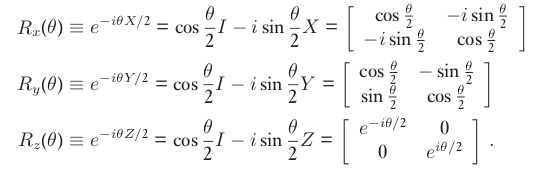
Rx rotates around the x axis, Ry rotates around the y axis and Rz rotates around the z axis.
These operators are not necessarily self-adjoint. The inverses of Rx(θ), Ry(θ) and Rz(θ) are, respectively, Rx(-θ), Ry(-θ) and Rz(-θ).
Hadamard
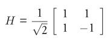
The Hadamard operator, denoted by the letter ‘H’, is a self-adjoint operator that can be used to turn non-superposed states into superposed states (and vice versa), as shown in the following examples.
- H|0⟩ = (|0⟩+|1⟩)/√2
- H|1⟩ = (|0⟩-|1⟩)/√2
- H(|0⟩+|1⟩)/√2 = |0⟩
- H(|0⟩-|1⟩)/√2 = |1⟩
The Hadamard operator can alternatively be defined as H=(X+Z)/√2. [13]
Phase
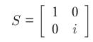
The Phase operator (denoted by the letter S) applies a phase factor 𝑖 to the state |1⟩. Using it has the same effect as an Rz(π/2) transformation. [14]
- S|0⟩ = |0⟩
- S|1⟩ = 𝑖|1⟩
S is not self-adjoint; its inverse is the operator S* (conjugate transpose of S).
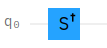
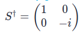
π/8
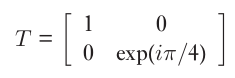
The π/8 operator (denoted by the letter T) applies a phase factor exp(𝑖π/4) to the state |1⟩. Using it has the same effect as an Rz(π/4) transformation.
- T|0⟩ = |0⟩
- T|1⟩ = exp(𝑖π/4)|1⟩
This operator is referred to as π/8 simply because it can alternatively be defined as a matrix with exp(±𝑖π/8) in the main diagonal entries and a global phase factor exp(𝑖π/8). [13]
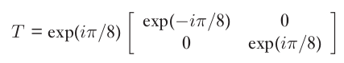
T is not self-adjoint; its inverse is the operator T* (conjugate transpose of T). [15]
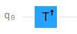
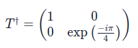
Multi-qubit operators
Controlled-NOT
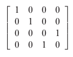
Controlled-NOT is the most basic of the multi-qubit operators. It has two operands: a control qubit and a target qubit. In terms of computational basis states, its behavior can be defined as follows:
- |𝑐⟩|𝑡⟩ ⟼ |𝑐⟩|𝑐 ⊕ 𝑡⟩, where 𝑐 and 𝑡 are, respectively, control and target, and “⊕” is an addition modulo 2, equivalent to the boolean XOR operator. [13]
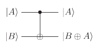
Basically, the Controlled-NOT operator inverts the state of the target qubit when the control qubit is set to |1⟩. When the control qubit is set to |0⟩, the state of the target qubit does not change. In both cases, the state of the control qubit does not change. [13]
It is possible to explain this behavior using an analogy with the ternary if operator of a programming language, as shown in the following example:
- |𝑐⟩|𝑡⟩ ⟼ |𝑐⟩|not 𝑐 if 𝑡 == 1 else c⟩
Note: in this example I specifically used the syntax of the ternary if of the Python language.
In general, the Controlled-NOT operator tends to behave like a Pauli-X operator applied to the target qubit when the control qubit collapses into |1⟩.
The Controlled-NOT operator is self-adjoint.
Swap
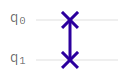
Swap is an operator composed of an arrangement of 3 Controlled-NOT operators. Its function is, basically, to swap the states of the pair of operand qubits.
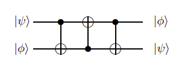
The behavior of the Swap operator can be defined as follows:
- |ψ⟩|ɸ⟩ ⟼ |ɸ⟩|ψ⟩
The Swap operator is self-adjoint.
Controlled-U
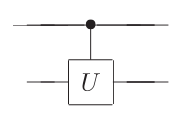
Controlled-U is a generalization of the various controlled operators that can be created from the Controlled-NOT operator and the 1-qubit operators. [13] Basically, for a 1-qubit unitary operator U, there can be a controlled version, which acts as U on the target qubit only when the control qubit collapses into |1⟩.
Toffoli
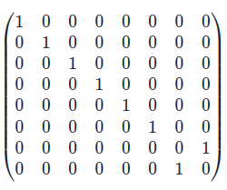
Toffoli is an operator that works similarly to Controlled-NOT, but with two control qubits.
In terms of computational basis states, the Toffoli operator inverts the state of the target qubit only when both control qubits are set to |1⟩. [13]
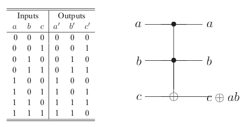
This behavior can be defined as follows:
- |𝑐₁⟩|𝑐₂⟩|𝑡⟩ ⟼ |𝑐₁⟩|𝑐₂⟩|𝑐₁𝑐₂ ⊕ 𝑡⟩, where 𝑐₁, 𝑐₂ and 𝑡 are, respectively, control 1, control 2, and target.
The Toffoli quantum logic gate can be implemented as a quantum circuit composed of 1- and 2-qubit gates, as shown in the following illustration:
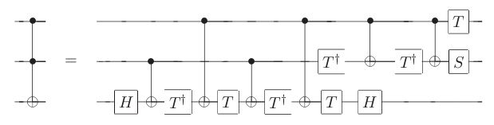
The Toffoli operator is self-adjoint.
References
[1] LIESEN, Jörg; MEHRMANN, Volker. Linear Algebra. [S. l.]: Springer International Publishing, 2015. DOI 10.1007/978–3–319–24346–7. Available at: http://dx.doi.org/10.1007/978-3-319-24346-7.
[2] Weisstein, Eric W. “Conjugate Transpose.” From MathWorld — A Wolfram Web Resource. https://mathworld.wolfram.com/ConjugateTranspose.html
[3] Weisstein, Eric W. “Inverse Function.” From MathWorld — A Wolfram Web Resource. https://mathworld.wolfram.com/InverseFunction.html
[4] Stover, Christopher and Weisstein, Eric W. “Matrix Inverse.” From MathWorld — A Wolfram Web Resource. https://mathworld.wolfram.com/MatrixInverse.html
[5] Rowland, Todd. “Unitary Matrix.” From MathWorld — A Wolfram Web Resource, created by Eric W. Weisstein. https://mathworld.wolfram.com/UnitaryMatrix.html
[6] Weisstein, Eric W. “Identity Matrix.” From MathWorld — A Wolfram Web Resource. https://mathworld.wolfram.com/IdentityMatrix.html
[7] IDENTITY Matrix. In: Wikipedia: the free encyclopedia. Available at: <https://en.wikipedia.org/wiki/Identity_matrix> Accessed on: Nov 26, 2020.
[8] Sakurai, J., Napolitano, J., & Dahmen, S. (2013). Mecânica quântica moderna (Modern Quantum Mechanics). Bookman.
[10] Horn, Roger A.; Johnson, Charles R. (1985). Matrix Analysis. [S.l.]: Cambridge University Press. ISBN 0–521–38632–2
[11] Stulpe W. (2009) Self-Adjoint Operator. In: Greenberger D., Hentschel K., Weinert F. (eds) Compendium of Quantum Physics. Springer, Berlin, Heidelberg. https://doi.org/10.1007/978-3-540-70626-7_196
[12] OPERADOR autoadjunto (Self-adjoint operator). In: Wikipédia: a enciclopédia livre. Available at: <https://pt.wikipedia.org/wiki/Operador_autoadjunto> Accessed on: Nov 26, 2020.
[13] Nielsen, M., & Chuang, I. (2010). Quantum Computation and Quantum Information: 10th Anniversary Edition. Cambridge: Cambridge University Press. doi:10.1017/CBO9780511976667
[14] Voorhoede, D., 2021. S Gate. [online] Quantum Inspire. Available at: <https://www.quantum-inspire.com/kbase/s-gate/> [Accessed 6 February 2021].
[15] Voorhoede, D., 2021. T Gate. [online] Quantum Inspire. Available at: <https://www.quantum-inspire.com/kbase/t-gate/> [Accessed 6 February 2021].
[16] Colin Wilmott. (2011). A generalized quantum SWAP gate. <https://arxiv.org/abs/0811.1684> [Accessed 6 February 2021].
[17] Voorhoede, D., 2021. Toffoli Gate. [online] Quantum Inspire. Available at: <https://www.quantum-inspire.com/kbase/toffoli/> [Accessed 7 February 2021].